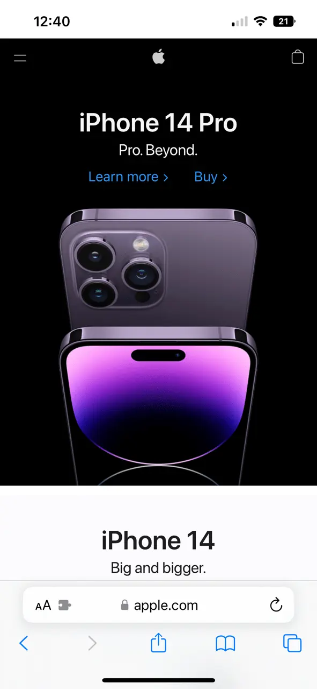
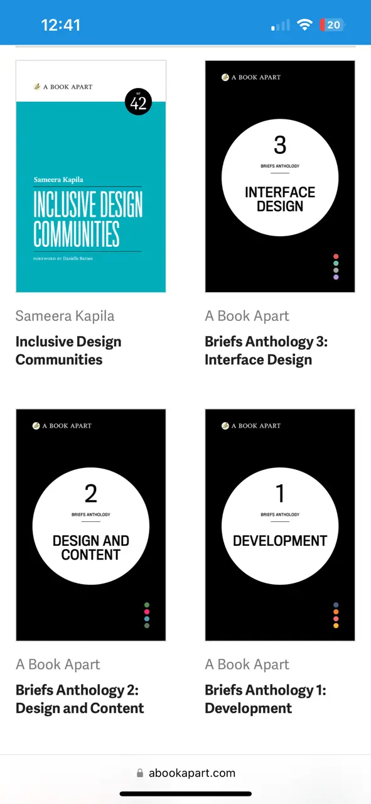

Visual Hierarchy
Apple
https://www.apple.com/
Visual Hierarchy is being applied in this website because your attention is first brought to the bold text which says "iPhone 14 Pro", then the words under it, and then the links under that to buy or learn more.
Fitt's Law
Intercom
https://www.intercom.comFitt's Law is being used in this website because there are not many places to click except for the 'Get Started,' and 'View Demo' buttons.
Visual Hierarchy
Apple
https://abookapart.com
Hick’s Law is being used in this website because instead of giving endless options, we are given simple links to chose from that'll get us specifically to where we want to go.